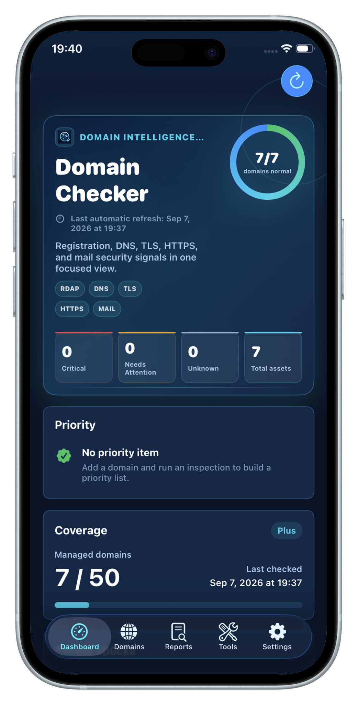
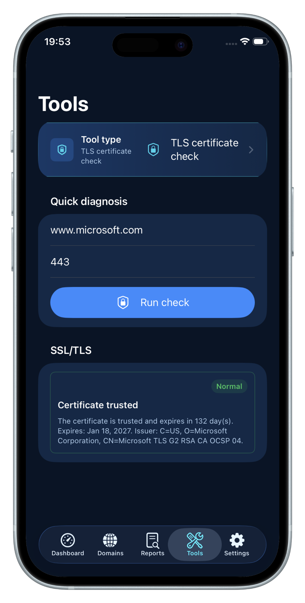
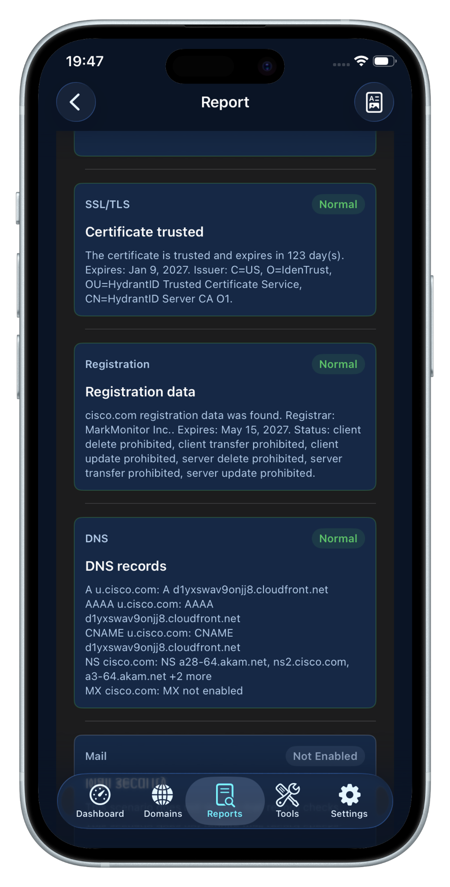

Domain Intelligence
Review registration data, expiration state, remaining days, and attention signals for each domain.
DOMAIN CHECKER: DNS & SSL
Registration, DNS records, HTTPS reachability, TLS certificates and mail security checks in one privacy-first application for personal sites, APIs, home servers, and small team assets.

FEATURES
Domain Checker: DNS & SSL organizes domain monitoring, DNS checker results, HTTPS health checks, TLS certificate monitoring, and mail security analysis into clear operational categories.
Review registration data, expiration state, remaining days, and attention signals for each domain.
A, AAAA, CNAME, NS, MX, TXT, and DMARC records are grouped by type so configurations stay readable.
Validate HTTPS responses, TLS handshakes, and certificate details, including services beyond port 443.
Use JSON for complete backup, migration, and restore, and export PDF reports when you need a readable copy.
APP EXPERIENCE
Review domain health, run targeted checks, and export readable reports from a mobile-first diagnostic workspace.

Run TLS certificate checks and inspect service security details without unnecessary steps.

Combine registration, DNS, TLS and mail signals into a structured report.
PRIVACY
Your domain inventory and reports stay in local app data. No cloud account is required, and backup files are exported only when you choose to create them.
WORKFLOW
Add a domain or URL, run an inspection, then review results by registration, DNS, HTTP, TLS, and mail categories.
Paste a domain, URL, or explicit service port directly.
Check registration, DNS, HTTPS, TLS, and mail security signals for the selected asset.
Read results by registration, DNS, HTTP, TLS, and mail categories.
Preserve full app data with JSON backup and export readable PDF reports.
OPSHOME INFRASTRUCTURE TOOLKIT
Need broader infrastructure visibility? Explore public services, private infrastructure, Docker, Proxmox, and network monitoring with OpsHome NOC.